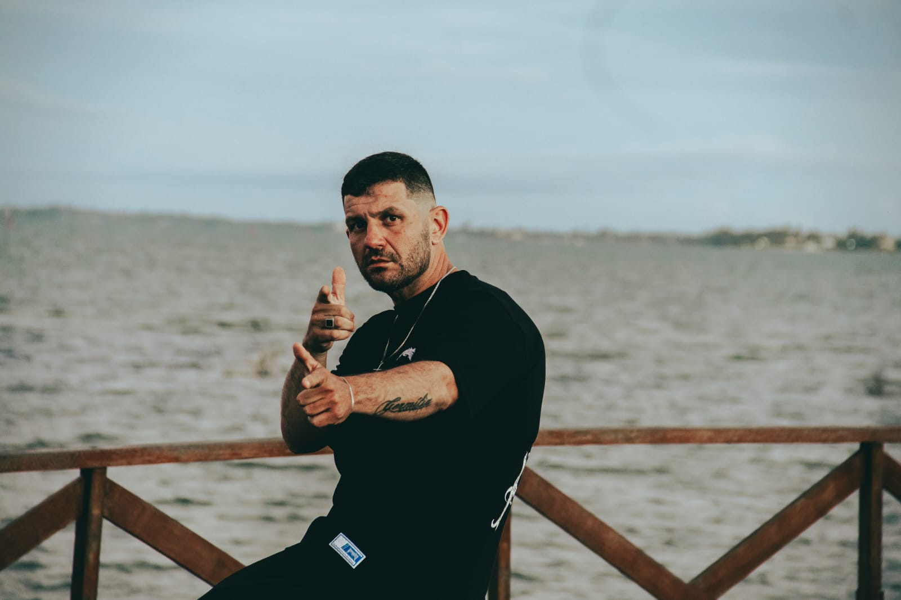

Spain MC: quando a vivência vira rap e a superação ganha voz
Nascido e criado em Brás de Pina, no subúrbio do Rio de Janeiro, Spain MC carrega nas rimas muito mais do que técnica ou estética musical. Sua trajetória é marcada por vivência real, escolhas difíceis e uma transformação que hoje se reflete em cada verso que escreve e canta.
Antes mesmo de se reconhecer como artista, Spain já havia sido apresentado ao Hip-Hop — não como moda, mas como linguagem de sobrevivência. Foi ali que ele encontrou um espaço de expressão em meio às contradições e desafios das ruas onde cresceu. Há cerca de seis anos, decidiu seguir o rap como caminho, guiado pela intuição e pelo desejo de viver do próprio sonho, com um objetivo claro: construir um futuro melhor e ajudar sua família.
O rap, para Spain, nunca foi apenas música. Sempre foi protesto, posicionamento e defesa de ideias que o sistema insiste em silenciar. Suas composições nascem da realidade vivida nas ruas do Rio de Janeiro, carregando verdade, crítica social e sentimento. Cada flow traz marcas de um cotidiano que poucos conhecem de fato.
Em um momento decisivo, a fé e uma nova oportunidade mudaram o rumo de sua vida. Spain se afastou da vida errada e encontrou na música uma forma de redenção. O rap passou a ser não só um meio de expressão, mas também uma ferramenta de transformação pessoal e espiritual.
Atualmente morando em Araruama, na Região dos Lagos, Spain mantém viva a essência do subúrbio carioca que o formou. Suas músicas funcionam como relatos de superação, mensagens diretas para quem ainda se sente preso a ciclos de violência, exclusão e desesperança.
Spain MC representa a voz de quem viveu, caiu, levantou e decidiu contar sua história através da arte.
Seu rap não romantiza o erro, mas evidencia que a mudança é possível. É a prova de que, quando a vivência encontra propósito, a música se transforma em instrumento de resistência, fé e recomeço. Este é o legado que Spain MC constrói, verso por verso, inspirando uma nova geração a acreditar no poder da transformação.